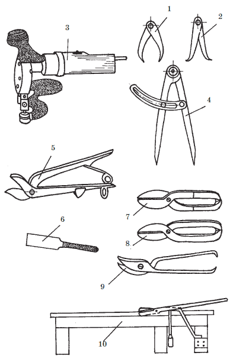
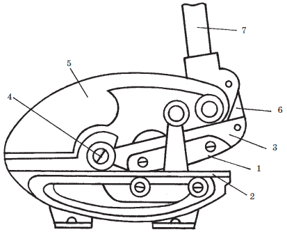
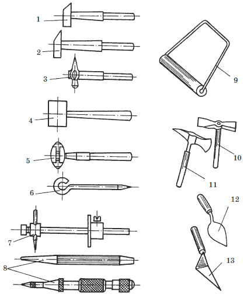
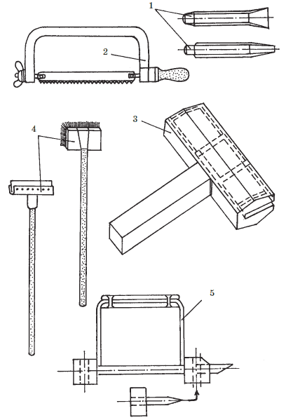
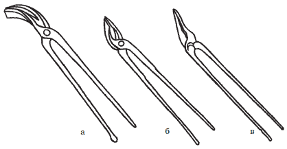
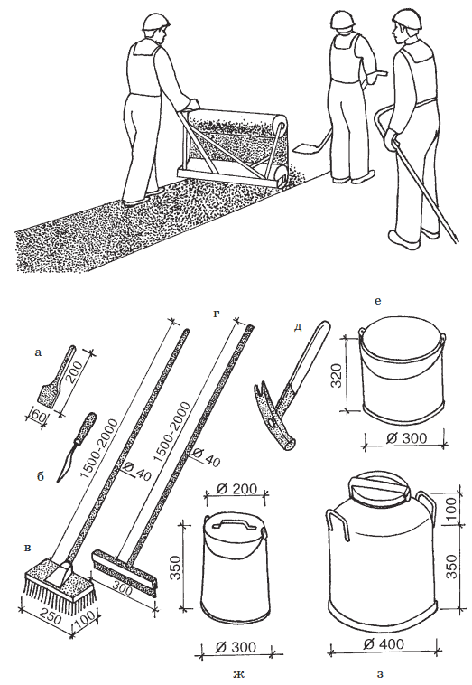

Инструменты, применяемые в кровельных работах.

Подготовительные работы при устройстве кровли складываются из множества различных по характеру и сложности производственных операций. Для их выполнения требуются специальные инструменты, приспособления и механизмы. Чем удобнее применяемая оснастка, тем выше производительность труда и легче труд рабочих.
Для резания кровельной стали при изготовлении небольших деталей применяют обычные ручные ножницы для правой и левой резки ( рис. 7), фигурные ножницы с заостренными губками (для вырезки кругов при изготовлении дефлекторов и флюгарок). Полукруглые режущие части ножниц усиливаются приваркой пластин из победита, что значительно увеличивает срок их службы.
При небольших объемах кровельных работ применяют стуловые ножницы ( рис. 7), позволяющие за счет удлинения ручки значительно снизить усилия при резке листов кровельной стали. Для ускорения резки кровельных листов стали могут применяться электровиброножницы или стационарные ножницы с ручным приводом ( рис. 8).

Рис. 7. Инструменты для кровельных работ по металлу: 1 – кронциркуль; 2 – нутромер; 3 – электровиброножницы; 4 – циркуль для разметки; 5 – ножницы для резки листов и асбестоцементных плит; 6 – шпатель; 7 – правые ножницы; 8 – левые ножницы; 9 – ножницы с изогнутыми ножами; 10 – стуловые ножницы

Рис. 8. Стационарные ножницы с ручным приводом: 1 – подвижной нож; 2 – неподвижный нож; 3 – опора; 4 – ось; 5 – корпусная станина; 6 – передаточный рычаг; 7 – рукоятка
Для кровельных работ используют различные молотки: большой и малый, фигурный, специальный, слесарный и деревянный. Молотки имеют деревянные ручки, закрытые со стороны рабочей части жестяным футляром длиной 10–12 см.
Малый и большой молотки ( рис. 9), имеющие в сечении форму квадрата, используют при формировании лежачих и стоячих фальцевых соединений: большой – в качестве передвижного упора, малый – в качестве подсекальника и бойка, а также для равнения стоячих гребней и забивки кляммер. Фигурный молоток применяют для выполнения сферических поверхностей на заготовках из кровельной стали, а также для правки водосточных труб и желобов. Специальный молоток с загнутым концом позволяет обрабатывать соединения кровельной стали в труднодоступных местах, при соединении флюгарок с основанием, при обработке внутренних кромок и др. Деревянный молоток (киянку) используют для подготовки и соединения рядового покрытия кровли лежачими и стоячими фальцами.

Рис. 9. Инструменты для кровельных работ: 1 – молоток-подсекальник; 2 – молоток-ручник; 3 – слесарный молоток; 4 – киянка; 5 – молоток-правильник со сменным бойками; 6 – чертилка; 7 – рейсмус; 8 – кернеры; 9 – каток; 10 – молоток-кирочка; 11 – молоток-топорик; 12 – кельма овальная; 13 – кельма остроугольная

Рис. 9. Инструменты для кровельных работ (продолжение): 1 – зубила; 2 – ножовка; 3 – кромкогибщик; 4 – щетки для на несения горячей мастики; 5 – гребнегиб для формирования фальцев
При заготовке кровельных листов для рядового покрытия кровель используют для формирования фальцев верстаки или фальцегибочные станки (обычные или универсальные).
При монтаже металлических покрытий крыш кровельщику приходится загибать края кровельных листов. Обычно эту работу выполняют при помощи слесарных плоскогубцев. Применение для этой цели специальных клещей позволяет повысить производительность труда и качество заготовок. Специальные кровельные клещи бывают полукруглые, кривые и прямые ( рис. 10).

Рис. 10. Кровельные клещи: а – полукруглые; б – кривые; в – прямые
При наклейке рулонных кровельных материалов и небольших объемах работ, когда невозможно применить машины, используют ручной инструмент, приспособления и инвентарь: шпатель металлический, шило шорное, щетку для нанесения мастики, гребок с резиновой вставкой, молоток штукатурный, бачок емкостью 20 л для мастики, ведро транспортное емкостью 15 л, каток для прижатия рулонных полотнищ ( рис. 11).

Рис. 11. Ручной инструмент для кровельных и изоляционных работ: а – шпатель металлический; б – шило шорное; в – щетка для нанесения мастики; г – гребок с резиновой вставкой; д – молоток штукатурный; е – бачок для мастики емкостью 20 л; ж – ведро вместимостью 15 л; з – термос емкостью 25 л
При больших объемах кровельных работ могут применяться комплекты машин и механизмов: автогудронаторы, котлы-термосы, передвижные установки для подачи горячего битума на крышу, удочки для нанесения мастики, прикатывающие катки и другие.